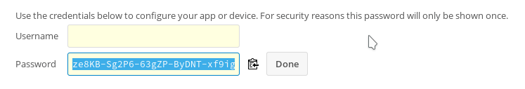

Synchronizing with KDE PIM¶
KOrganizer and KAddressbook can synchronize data with a Nextcloud server.
This can be done by following these steps:
- Open KOrganizer and in the calendar list (bottom left) right-click and choose
Add Calendar

- In the resulting list of resources, pick
DAV groupware resource

- Enter your user name and password, or, if you have two-factor authentication enabled, use an App Password. Then click next.

To create an App Password if you have two-factor authentication:

- in Nextcloud, go to your user settings and look under security.
- Look for the button
create new App passwordand before it, enter a unique name, likeKOrganizer on my laptop
- then click
create new App password. Copy-paste the password!
- As Groupware Server, choose ownCloud or Nextcloud in the drop-down menu. Click next.

- Enter your Nextcloud server url and, if needed, installation path (anything that comes after the first /, for example
mynextcloudinhttps://exampe.com/mynextcloud). Then click next.

- You can now test the connection. If it does not work, you can go back and try to fix it with other settings.


Note: the test can take a while!
- Pick a name for this resource, for example
workorprivateBy default, both CalDav and CardDav are synced, that is, both calendar and contacts. Choose a refresh time, 5 minutes is default but quite often for use on a laptop. Perhaps you want to save power and be a bit slower, like once every 30 minutes. Note that you can update with a right-click on the item in the calendar list and when you create a new appointment it is synced to Nextcloud right away.
done¶
After a few seconds to minutes (the sync can take a while on a slow connection) KOrganizer will show your calendars and KAddressBook will show your contacts!